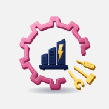

งานระบบวิศวกรรมโครงการจ้างบริหารจัดการอาคาร
สำนักบริหารระบบกายภาพ
📲 ติดตั้งไอคอนบนหน้าจอ
ดาวน์โหลดแล้ว เหลืออีกนิดเดียว:
- เปิดแอป การตั้งค่า
- แตะ ดาวน์โหลดโปรไฟล์แล้ว (ด้านบนสุด)
- แตะ ติดตั้ง → ใส่รหัสเครื่อง → ติดตั้ง อีกครั้ง
ถ้าขึ้นถามให้ดาวน์โหลดไฟล์: แตะ ดาวน์โหลด → เปิดแอป ไฟล์ → โฟลเดอร์ ดาวน์โหลด → แตะ install.mobileconfig แล้วทำตามข้อ 1–3
ไอคอนโลโก้จะขึ้นบนหน้าจอโฮมทันที
กรุณาเปิดลิงก์นี้ใน Safari
ติดตั้งไอคอนได้เฉพาะใน Safari
แตะ ⋯ หรือ ⋮ → เปิดใน Safari หรือคัดลอกลิงก์ไปวางใน Safari
ถ้าไม่มีปุ่มติดตั้ง: แตะ ⋮ มุมขวาบนของ Chrome → เพิ่มลงในหน้าจอหลัก หรือ ติดตั้งแอป
เข้าสู่ระบบ